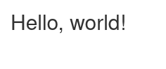

Shiny servers¶
Users of the Esrum cluster have two options for running Shiny servers: Either via a publicly accessible server for non-GDPR project/non-confidential data or by running Shiny directly or through RStudio on data in access-controlled projects.
The public Shiny server¶
Warning
DO NOT put any GDPR projected or otherwise confidential data in your
SUN-CBMR-shinyapp sub-folders, as these folders are publicly
accessible. Files and folders in SUN-CBMR-shinyapp are
additionally writable by all users with the access to the folder.
UCPH-IT makes a public Shiny server available at
https://shinyapp01.ku.dk/cbmr/. This server is accessible to everyone
inside and outside UCPH. To make use of this service, you must first
apply for access to the N-SUN-CBMR-shinyapp-R and the
N-SUN-CBMR-shinyapp-W as described on the
Applying for access page.
Once you have been given access to these groups, you can access the
SUN-CBMR-shinyapp at ~/ucph/ndir/SUN-CBMR-shinyapp/. If you
cannot access the ndir folder, then please see the
Troubleshooting section on the
Connecting to the cluster page.
It is strongly recommended that you create a folder with your username:
$ mkdir -p ~/ucph/ndir/SUN-CBMR-shinyapp/$USER
This creates a folder with your username and adds a shortcut to your
home folder named shiny. To verify that everything is working
correctly, create a file name app.R in
~/ucph/ndir/SUN-CBMR-shinyapp/$USER with the following content:
1library(shiny)
2
3# Define UI ----
4ui <- fluidPage(
5titlePanel("Hello, world!"),
6)
7
8# Define server logic ----
9server <- function(input, output) {
10
11}
12
13# Run the app ----
14shinyApp(ui = ui, server = server)
Then visit https://shinyapp01.ku.dk/cbmr/ and click on the folder corresponding to your username, and you should see the following in your browser:
